Namespaces | |
| namespace | algorithm |
| namespace | graph |
| namespace | result |
| namespace | sampler |
| namespace | system |
| namespace | updater |
| namespace | utility |
| namespace | _version |
| namespace | model |
| namespace | utils |
| namespace | variable_type |
Typedefs | |
| using | FloatType = double |
| Note: | |
| using | RandomEngine = utility::Xorshift |
Functions | |
| void | declare_Graph (py::module &m) |
| template<typename FloatType> | |
| void | declare_Dense (py::module &m, const std::string &suffix) |
| template<typename FloatType> | |
| void | declare_Sparse (py::module &m, const std::string &suffix) |
| template<typename FloatType> | |
| void | declare_CSRSparse (py::module &m, const std::string &suffix) |
| template<typename FloatType> | |
| void | declare_Polynomial (py::module &m, const std::string &suffix) |
| void | declare_Dir (py::module &m) |
| template<typename FloatType> | |
| void | declare_Square (py::module &m, const std::string &suffix) |
| void | declare_ChimeraDir (py::module &m) |
| template<typename FloatType> | |
| void | declare_Chimera (py::module &m, const std::string &suffix) |
| template<typename GraphType> | |
| void | declare_ClassicalIsing (py::module &m, const std::string >ype_str) |
| template<typename GraphType> | |
| void | declare_ClassicalIsingPolynomial (py::module &m, const std::string >ype_str) |
| template<typename GraphType> | |
| void | declare_KLocalPolynomial (py::module &m, const std::string >ype_str) |
| template<typename GraphType> | |
| void | declare_TransverseIsing (py::module &m, const std::string >ype_str) |
| template<typename GraphType> | |
| void | declare_ContinuousTimeIsing (py::module &m, const std::string >ype_str) |
| template<template< typename > class Updater, typename System, typename RandomNumberEngine> | |
| void | declare_Algorithm_run (py::module &m, const std::string &updater_str) |
| template<typename SystemType> | |
| std::string | repr_impl (const utility::UpdaterParameter< SystemType > &) |
| template<> | |
| std::string | repr_impl (const utility::UpdaterParameter< system::classical_system > &obj) |
| template<> | |
| std::string | repr_impl (const utility::UpdaterParameter< system::classical_constraint_system > &obj) |
| template<> | |
| std::string | repr_impl (const utility::UpdaterParameter< system::transverse_field_system > &obj) |
| void | declare_ClassicalUpdaterParameter (py::module &m) |
| void | declare_ClassicalConstraintUpdaterParameter (py::module &m) |
| void | declare_TransverseFieldUpdaterParameter (py::module &m) |
| template<typename SystemType> | |
| void | declare_Schedule (py::module &m, const std::string &systemtype_str) |
| template<typename System> | |
| void | declare_get_solution (py::module &m) |
| template<typename FloatType> | |
| void | declare_BinaryPolynomialModel (py::module &m) |
| template<typename FloatType> | |
| void | declare_IsingPolynomialModel (py::module &m) |
| void | declare_IntegerQuadraticModel (py::module &m) |
| void | declare_IntegerPolynomialModel (py::module &m) |
| void | declare_IntegerSAResult (py::module &m) |
| void | declare_SampleByIntegerSA (py::module &m) |
| template<class ModelType> | |
| void | declare_SASampler (py::module &m, const std::string &post_name="") |
| void | declare_UpdateMethod (py::module &m) |
| void | declare_RandomNumberEngine (py::module &m) |
| void | declare_TemperatureSchedule (py::module &m) |
Variables | |
| __path__ = extend_path(__path__, __name__) | |
| list | __all__ |
Typedef Documentation
◆ FloatType
| using openjij::FloatType = double |
Note:
By default, cxxjij (python implementation of openjij) is installed following the configuration listed below. If you want to use cxxjij with non-default settings (e.g. using mersenne twister, calculating with long double precision, etc), please change the following configuration and recompile with the command:
$ python setup.py clean && python setup.py install
◆ RandomEngine
Function Documentation
◆ declare_Algorithm_run()
|
inline |
◆ declare_BinaryPolynomialModel()
| void openjij::declare_BinaryPolynomialModel | ( | py::module & | m | ) |
References declare_BinaryPolynomialModel().
Referenced by declare_BinaryPolynomialModel(), and PYBIND11_MODULE().
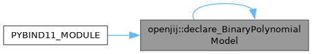
◆ declare_Chimera()
|
inline |
References openjij::graph::Chimera< FloatType >::get_num_column(), openjij::graph::Chimera< FloatType >::get_num_in_chimera(), openjij::graph::Chimera< FloatType >::get_num_row(), openjij::graph::Chimera< FloatType >::h(), openjij::graph::Chimera< FloatType >::J(), openjij::graph::Chimera< FloatType >::to_ind(), and openjij::graph::Chimera< FloatType >::to_rci().
Referenced by PYBIND11_MODULE().
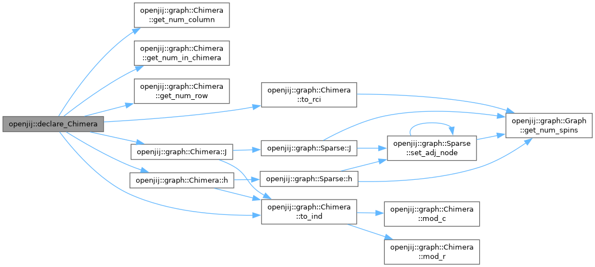
◆ declare_ChimeraDir()
|
inline |
References openjij::graph::IN_0or4, openjij::graph::IN_1or5, openjij::graph::IN_2or6, openjij::graph::IN_3or7, openjij::graph::MINUS_C, openjij::graph::MINUS_R, openjij::graph::PLUS_C, and openjij::graph::PLUS_R.
Referenced by PYBIND11_MODULE().
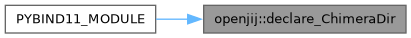
◆ declare_ClassicalConstraintUpdaterParameter()
|
inline |
References openjij::utility::UpdaterParameter< system::classical_constraint_system >::beta, declare_ClassicalConstraintUpdaterParameter(), openjij::utility::UpdaterParameter< system::classical_constraint_system >::lambda, and repr_impl().
Referenced by declare_ClassicalConstraintUpdaterParameter(), and PYBIND11_MODULE().
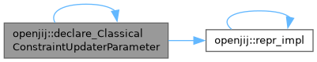
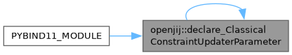
◆ declare_ClassicalIsing()
|
inline |
◆ declare_ClassicalIsingPolynomial()
|
inline |
◆ declare_ClassicalUpdaterParameter()
|
inline |
References openjij::utility::UpdaterParameter< system::classical_system >::beta, declare_ClassicalUpdaterParameter(), and repr_impl().
Referenced by declare_ClassicalUpdaterParameter(), and PYBIND11_MODULE().
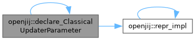
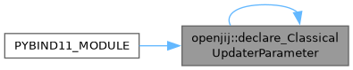
◆ declare_ContinuousTimeIsing()
|
inline |
◆ declare_CSRSparse()
|
inline |
References openjij::graph::CSRSparse< FloatType >::calc_energy(), and openjij::graph::CSRSparse< FloatType >::get_interactions().
Referenced by PYBIND11_MODULE().
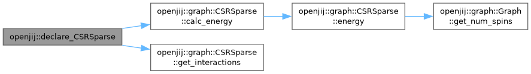
◆ declare_Dense()
|
inline |
References openjij::graph::Dense< FloatType >::calc_energy(), openjij::graph::Dense< FloatType >::get_interactions(), openjij::graph::Dense< FloatType >::h(), openjij::graph::Dense< FloatType >::J(), and openjij::graph::Dense< FloatType >::set_interaction_matrix().
Referenced by PYBIND11_MODULE().
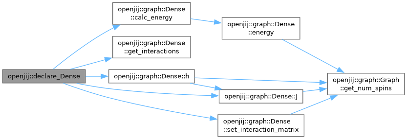
◆ declare_Dir()
|
inline |
References openjij::graph::MINUS_C, openjij::graph::MINUS_R, openjij::graph::PLUS_C, and openjij::graph::PLUS_R.
Referenced by PYBIND11_MODULE().
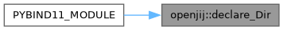
◆ declare_get_solution()
|
inline |
References declare_get_solution(), and openjij::result::get_solution().
Referenced by declare_get_solution(), and PYBIND11_MODULE().
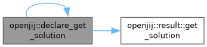
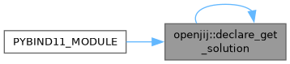
◆ declare_Graph()
|
inline |
References openjij::graph::Graph::gen_binary(), openjij::graph::Graph::gen_spin(), and openjij::graph::Graph::size().
Referenced by PYBIND11_MODULE().
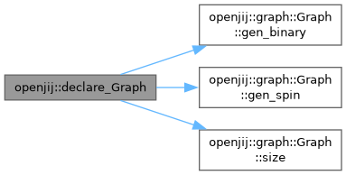
◆ declare_IntegerPolynomialModel()
| void openjij::declare_IntegerPolynomialModel | ( | py::module & | m | ) |
References declare_IntegerPolynomialModel().
Referenced by declare_IntegerPolynomialModel(), and PYBIND11_MODULE().
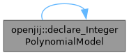
◆ declare_IntegerQuadraticModel()
| void openjij::declare_IntegerQuadraticModel | ( | py::module & | m | ) |
References declare_IntegerQuadraticModel().
Referenced by declare_IntegerQuadraticModel(), and PYBIND11_MODULE().
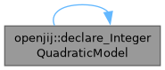
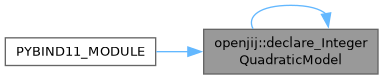
◆ declare_IntegerSAResult()
| void openjij::declare_IntegerSAResult | ( | py::module & | m | ) |
References declare_IntegerSAResult(), openjij::sampler::IntegerSAResult::energy, openjij::sampler::IntegerSAResult::energy_history, openjij::sampler::IntegerSAResult::solution, and openjij::sampler::IntegerSAResult::temperature_history.
Referenced by declare_IntegerSAResult(), and PYBIND11_MODULE().
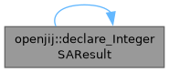
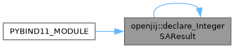
◆ declare_IsingPolynomialModel()
| void openjij::declare_IsingPolynomialModel | ( | py::module & | m | ) |
References declare_IsingPolynomialModel().
Referenced by declare_IsingPolynomialModel(), and PYBIND11_MODULE().
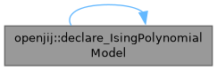
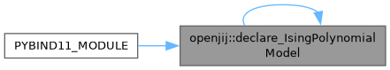
◆ declare_KLocalPolynomial()
|
inline |
◆ declare_Polynomial()
|
inline |
◆ declare_RandomNumberEngine()
| void openjij::declare_RandomNumberEngine | ( | py::module & | m | ) |
References declare_RandomNumberEngine(), openjij::algorithm::MT, openjij::algorithm::MT_64, and openjij::algorithm::XORSHIFT.
Referenced by declare_RandomNumberEngine(), and PYBIND11_MODULE().
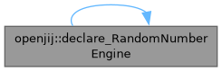
◆ declare_SampleByIntegerSA()
| void openjij::declare_SampleByIntegerSA | ( | py::module & | m | ) |
References declare_SampleByIntegerSA(), and openjij::sampler::SampleByIntegerSA().
Referenced by declare_SampleByIntegerSA(), and PYBIND11_MODULE().
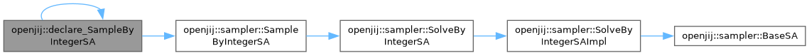
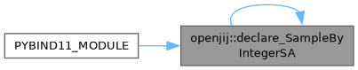
◆ declare_SASampler()
| void openjij::declare_SASampler | ( | py::module & | m, |
| const std::string & | post_name = "" ) |
References declare_SASampler(), and openjij::sampler::make_sa_sampler().
Referenced by declare_SASampler(), and PYBIND11_MODULE().
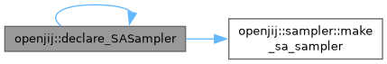
◆ declare_Schedule()
|
inline |
References declare_Schedule(), openjij::utility::make_schedule_list(), openjij::utility::Schedule< SystemType >::one_mc_step, repr_impl(), and openjij::utility::Schedule< SystemType >::updater_parameter.
Referenced by declare_Schedule(), and PYBIND11_MODULE().
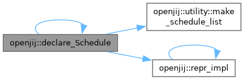
◆ declare_Sparse()
|
inline |
References openjij::graph::Sparse< FloatType >::adj_nodes(), openjij::graph::Sparse< FloatType >::calc_energy(), openjij::graph::Sparse< FloatType >::get_num_edges(), openjij::graph::Sparse< FloatType >::h(), and openjij::graph::Sparse< FloatType >::J().
Referenced by PYBIND11_MODULE().
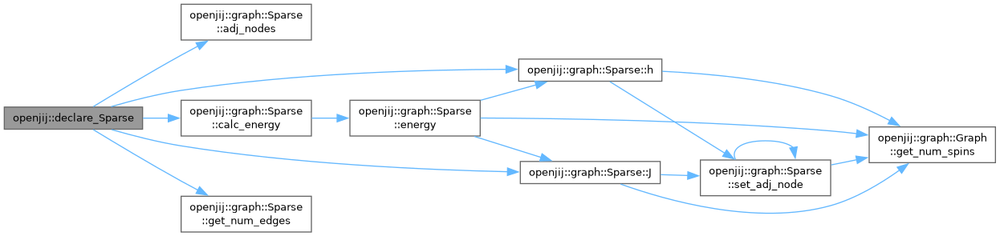
◆ declare_Square()
|
inline |
References openjij::graph::Square< FloatType >::get_num_column(), openjij::graph::Square< FloatType >::get_num_row(), openjij::graph::Square< FloatType >::h(), openjij::graph::Square< FloatType >::J(), openjij::graph::Square< FloatType >::to_ind(), and openjij::graph::Square< FloatType >::to_rc().
Referenced by PYBIND11_MODULE().
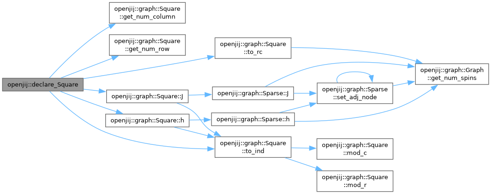
◆ declare_TemperatureSchedule()
| void openjij::declare_TemperatureSchedule | ( | py::module & | m | ) |
References declare_TemperatureSchedule(), openjij::utility::GEOMETRIC, and openjij::utility::LINEAR.
Referenced by declare_TemperatureSchedule(), and PYBIND11_MODULE().
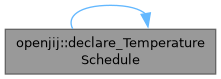
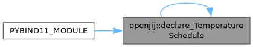
◆ declare_TransverseFieldUpdaterParameter()
|
inline |
References openjij::utility::UpdaterParameter< system::transverse_field_system >::beta, declare_TransverseFieldUpdaterParameter(), repr_impl(), and openjij::utility::UpdaterParameter< system::transverse_field_system >::s.
Referenced by declare_TransverseFieldUpdaterParameter(), and PYBIND11_MODULE().
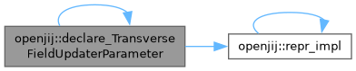
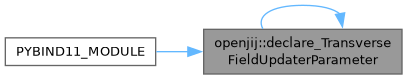
◆ declare_TransverseIsing()
|
inline |
◆ declare_UpdateMethod()
| void openjij::declare_UpdateMethod | ( | py::module & | m | ) |
References declare_UpdateMethod(), openjij::algorithm::HEAT_BATH, openjij::algorithm::METROPOLIS, openjij::algorithm::OPT_METROPOLIS, and openjij::algorithm::SUWA_TODO.
Referenced by declare_UpdateMethod(), and PYBIND11_MODULE().
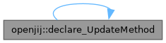
◆ repr_impl() [1/4]
|
inline |
◆ repr_impl() [2/4]
|
inline |

◆ repr_impl() [3/4]
|
inline |

◆ repr_impl() [4/4]
|
inline |
References repr_impl().
Referenced by declare_ClassicalConstraintUpdaterParameter(), declare_ClassicalUpdaterParameter(), declare_Schedule(), declare_TransverseFieldUpdaterParameter(), repr_impl(), repr_impl(), repr_impl(), and repr_impl().
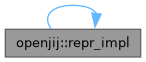
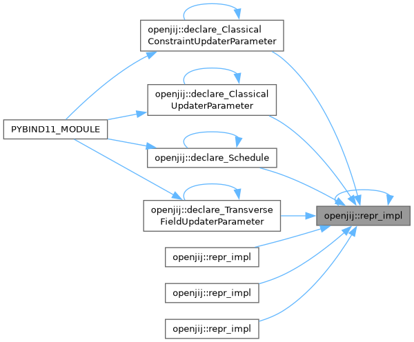
Variable Documentation
◆ __all__
|
private |
◆ __path__
|
private |